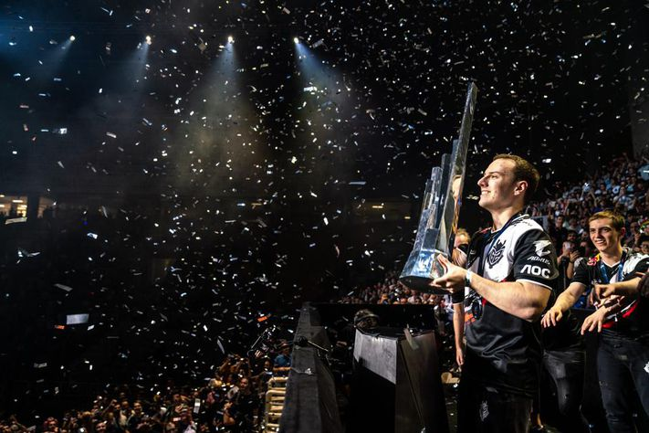

LEC superstar Perkz officially joins Cloud9
BY MATT JOHNSON, DECEMBER 2 2021
C9 did exceptionally well in the f9 did exceptionally well in the first half of Summer Split with a
nine-game winning streak,
but once former coach Bok “Reapered” Han-gyu started experimenting with the
team’s drafts,
the championship team failed to conquer the playoffs, missing their chances to attend
Worlds 2020.
As for Perkz, the multi-role player left G2 with a handful of notable accolades. Aside from G2’s known
accomplishment as finalists during Worlds 2019, Perkz helped the team grab
eight total LEC
championships and MSI 2019.Now part of the C9 organization, Perkz will reunite with former G2 teammate
Jesper “Zven” Svenningsen as well as
meet some of NA’s finest players in Robert “Blaber” Huang and
Philippe “Vulcan” Laflamme.
The mid-laner will also get to share his veteran experience and knowledge
with rookie top-laner Ibrahim “Fudge” Allami.
“I want to make NA great — not again, just great,” Perkz said with a smile.
“It’s never been great before honestly so let’s start with simple steps.”
